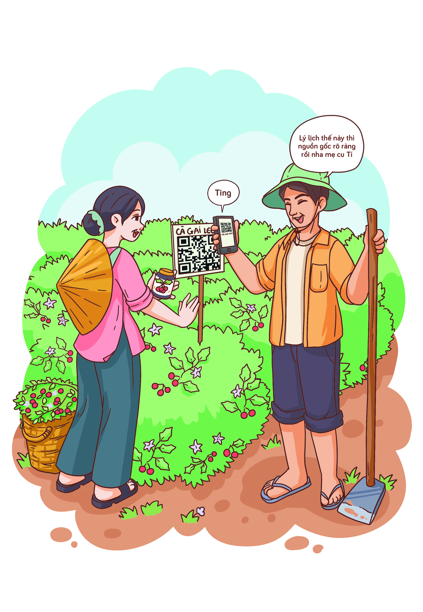
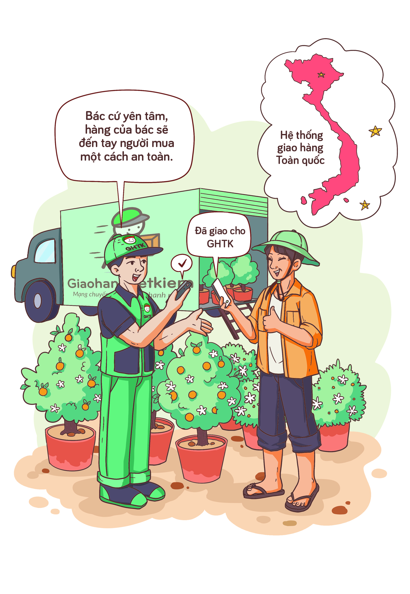

Những năm gần đây, thương mại dựa trên công nghệ số đang phát triển nhanh chóng với ngày càng nhiều nền
tảng số, mô hình kinh doanh mới, tạo động lực và không gian phát triển cho kinh tế số, mở ra cho hộ sản
xuất, doanh nghiệp địa phương cơ hội tiếp cận với thị trường tiêu thụ rộng lớn trong và ngoài nước, góp
phần thúc đẩy kinh tế số nông nghiệp, nông thôn.
Tóm tắt
Truy xuất nguồn gốc nông sản
Hiện nay, việc dán tem truy xuất nguồn gốc hàng hóa có vai trò quan trọng đối với các doanh nghiệp, hợp
tác xã, cơ sở sản xuất. Hàng hóa được dán tem truy xuất sẽ giúp minh bạch về nguồn gốc sản phẩm bằng sự
giám sát của cơ quan quản lý nhà nước, góp phần tạo sự tin tưởng cho khách hàng, tăng sức cạnh tranh
trên thị trường và nâng tầm giá trị sản phẩm.

Dữ liệu truy xuất nguồn gốc dựa trên nền tảng thiết bị thông minh, quản lý, phân tích về toàn bộ quá
trình sản xuất từ gieo trồng đến chăm sóc, thu hoạch, chế biến, sơ chế, tình trạng quản lý cây trồng,
tình trạng quản lý vật tư nông nghiệp. Thông qua đó, các đối tác nhập khẩu sản phẩm nông sản Việt Nam từ
nước ngoài cũng có thể theo dõi, giám sát từng giai đoạn sản xuất trên đồng ruộng của người nông dân tại
Việt Nam thông qua dữ liệu hình ảnh từ camera.
Truy xuất nguồn gốc nông sản giúp hợp tác xã Cự Nẫm tạo dựng được niềm tin của
người tiêu dùng, từ đó
mở rộng thị trường và xây dựng thương hiệu
Gia đình chị Nguyễn Thị Giang chủ hợp tác xã Cự Nẫm, xã Cự Nẫm, huyện Bố Trạch, tỉnh Quảng Bình bắt đầu
trồng và phát triển diện tích cây dược liệu cà gai leo từ năm 2015, để sản xuất bền vững và hiệu quả,
toàn bộ diện tích trồng cây cà gai leo đều được áp dụng quy trình trồng và chăm sóc cây nguyên liệu
sạch, năm 2018 trước nhu cầu của người tiêu dùng về các sản phẩm chiết xuất từ cây cà gai leo, gia đình
bắt đầu nghiên cứu sản xuất sản phẩm Cao cà gai leo và thành lập hợp tác xã. Mặc dù, cây cà gai leo nhà
chị Giang cam kết sạch hoàn toàn và tuyệt đối không dùng phân bón hóa học, việc tiêu thụ sản phẩm ra thị
trường vẫn gặp nhiều khó khăn, chưa có được niềm tin từ người tiêu dùng.
Năm 2019, sau khi nghiên cứu, tìm hiểu về việc truy xuất nguồn gốc sản phẩm, chị Giang đã thực hiện thủ
tục đăng ký và sử dụng 20.000 tem mã QR của trung tâm mã số mã vạch quốc gia để truy xuất nguồn gốc sản
phẩm cho Cao cà gai leo Thanh Bình, việc này giúp gia đình chị quản lý được dòng hàng, bảo vệ thương
hiệu, chứng minh nguồn gốc xuất xứ cũng như bày tỏ thiện chí minh bạch mọi thông tin cần thiết.
Việc dán nhãn mã QR truy xuất nguồn gốc sản phẩm đã giúp người tiêu dùng biết rõ nguồn gốc, xuất xứ,
nguồn nguyên liệu làm ra sản phẩm Cao cà gai leo từ đó dần dần tạo được niềm tin nơi người tiêu dùng,
giúp hợp tác xã tiếp cận được với khách hàng khó tính, từ đó đi vào sản xuất ổn định, tổng doanh thu ước
đạt trên 1,2 tỷ đồng/năm, thu lãi từ 600 - 700 triệu đồng/năm, đã góp phần tạo việc làm cho hơn 30 lao
động địa phương với thu nhập ổn định từ 4 - 7 triệu đồng/người/tháng. Hiện nay, sản phẩm Cao cà gai leo
Thanh Bình không chỉ có mặt trên thị trường tỉnh Quảng Bình mà còn vươn ra các tỉnh, thành khác như:
Thành phố Hồ Chí Minh, Hà Nội, Điện Biên, Đà Nẵng, Đồng Nai, khu vực Tây Nguyên,…
Trước nhu cầu sử dụng sản phẩm sạch để đảm bảo sức khỏe ngày càng cao, việc áp dụng truy suất nguồn gốc
sản phẩm giúp cho bà con nông dân có thể tiếp cận được với khách hàng khó tính, tăng được sức cạnh tranh
trên thị trường.
Đưa nông sản lên sàn
Trước đây, đến mùa thu hoạch, người dân lại bán nông sản cho thương lái, hay mang ra chợ, còn bây giờ
người dân có thể bán nông sản trên các sàn thương mại điện tử. Cách làm này đang được nhiều bà con nông
dân áp dụng để tăng sản lượng tiêu thụ, tiếp cận được với thị trường rộng lớn.
Người dân chỉ cần tạo tài khoản bán hàng, tạo gian hàng và thông tin về các sản phẩm là có thể bán được
ngay, việc này không yêu cầu về kỹ thuật và vốn đầu tư lớn ban đầu mà tiếp cận ngay được với khách hàng
trên cả nước.
Thương mại điện tử giúp thay đổi cuộc sống người dân xã Yên Hòa, gợi mở mô hình
làm giàu cho các địa
phương khác
Tại xã Yên Hòa, huyện Yên Mô, tỉnh Ninh Bình trước đây, mặc dù tại địa phương có một số sản phẩm nông
sản nổi bật, đặc sản, tuy nhiên việc buôn bán của nhân dân chủ yếu theo hình thức truyền thống, thương
mại điện tử chưa được áp dụng, các sản phẩm còn đơn điệu, bao bì chưa bắt mắt, chưa sử dụng tem truy
xuất nguồn gốc.

Để mở rộng thị trường tiêu thụ, người dân nơi đây đã triển khai đưa các sản phẩm của xã lên sàn thương
mại điện tử PostMart. Hiện đã có các sản phẩm như: cá chạch sụn kho niêu, đông lạnh, sấy khô; chuối tây
sấy dẻo. Người dân ý thức được lợi ích của việc bán hàng qua nền tảng thương mại điện tử và đầu tư xây
dựng hình ảnh, thương hiệu cho sản phẩm, sản phẩm được đưa lên sàn đã được thiết kế thêm bao bì, nhãn
mác, tem truy xuất nguồn gốc. Từ đó, sản phẩm được nhiều người biết đến hơn, số lượng hàng hóa bán được
nhiều hơn qua sàn thương mại điện tử, qua website, qua mạng, qua các nhóm bán hàng trên mạng Zalo,
Facebook,...
Thương mại điện tử đã thay đổi cuộc sống người dân tại xã Yên Hòa, huyện Yên Mô, tỉnh Ninh Bình, và chắc
chắn trong thời gian tới, thương mại điện tử cũng sẽ thay đổi cuộc sống người dân tại nhiều địa phương,
đặc biệt là những địa phương đang có nhiều sản phẩm đặc trưng nhưng chưa biết cách tiếp cận công nghệ để
mở mang thị trường.
Mô hình “Cây xoài nhà tôi”
Đồng Tháp là địa phương có diện tích trồng xoài lớn nhất đồng bằng sông Cửu Long với hơn 9.000 ha, sản
lượng hàng năm đạt trên 90.000 tấn. Trước đây xoài chủ yếu bán cho thương lái, giá cả bấp bênh nên giá
trị trái xoài không được phát huy.
Sáng tạo trong lao động sản xuất, bà con nông dân xã Mỹ Xương hình thành mô hình
phát triển kinh tế
mới, giúp nâng tầm cây xoài địa phương
Để mở rộng đầu ra cho đặc sản quê nhà, những nông dân Hợp tác xã Xoài Mỹ Xương, Xã Mỹ Xương, Huyện Cao
Lãnh, Đồng Tháp đã nghĩ ra cách bán trái cây qua mạng cho khách hàng khắp cả nước theo mô hình “Cây xoài
nhà tôi”. Mô hình này sau đó đã nhân rộng ra khắp toàn tỉnh, mang lại thu nhập cao, thay đổi tư duy làm
kinh tế của những người nông dân trồng xoài.
Những cây xoài được chọn vào mô hình “Cây xoài nhà tôi” phải đảm bảo các tiêu chí như: cây to khỏe, gần
đường lớn, người canh tác chuẩn, điều kiện vệ sinh tốt, sản lượng cây xoài cao và phải trồng theo tiêu
chuẩn, quy trình VietGap, Global Gap.
Trên mỗi cây xoài đều có gắn mã QR, các nông hộ tham gia mô hình “Cây xoài nhà tôi” được tạo lập cơ sở
dữ liệu riêng, quản lý tất cả các cây xoài tham gia mô hình bao gồm: tên nông hộ, địa chỉ, số điện thoại
liên hệ, thông tin định danh của từng cây xoài gồm có: Giống cây, mã định danh, tuổi cây, giá bán, thời
gian sở hữu, hình ảnh về cây xoài. Mỗi cây xoài sẽ được cấp một mã định danh duy nhất thông qua mã QR.
Khách hàng có thể vào website: https://nongsancaolanh.vn để chọn 1 cây xoài mà mình vừa ý và đặt mua.
Tùy vào chủng loại và năm tuổi mà từng cây xoài sẽ có giá bán khác nhau, mức giá trung bình 4 - 7 triệu
đồng/cây, thậm chí với giống xoài cát Hòa Lộc còn có giá lên đến 10 triệu đồng/cây.
Theo thỏa thuận, trong suốt một năm, với hai vụ thu hoạch, người mua được hưởng toàn bộ số quả trên cây
(khoảng 70 – 150 kg/vụ). Xoài sẽ được đóng gói chuyển đến tận nhà người mua, ngoài ra, người sở hữu cây
xoài còn có thể đến thăm hoặc quan sát từ xa qua hình ảnh được cập nhật trên website. Người tiêu dùng sẽ
được sử dụng những trái xoài có đầy đủ nguồn gốc và không mua nhầm hàng kém chất lượng mà giá cao.
Sự sáng tạo của nông dân Đồng Tháp đang nâng tầm giá trị cây xoài, cải thiện thu nhập, giúp họ trở thành
những nông dân hiện đại, gặt hái những trái ngọt trên chính mảnh đất quê hương của mình. Mô hình “Cây
xoài nhà tôi” cũng giúp người nông dân nhận được sự chia sẻ về tài chính của khách hàng trong quá trình
sản xuất, việc trở thành chủ sở hữu của một cây xoài cũng giúp người mua gắn bó hơn, hiểu hơn về giá trị
sức lao động của người nông dân.
Thiết lập kênh bán hàng riêng biệt
Mặc dù các kênh bán hàng thông qua sàn thương mại điện tử, trên các trang mạng xã hội đã mở ra cho hộ
sản xuất, doanh nghiệp địa phương cơ hội lớn, hiệu quả để tiếp cận với thị trường tiêu trong lớn trong
và ngoài nước.
Tuy nhiên vẫn có hộ sản xuất, doanh nghiệp với những nông sản và phương pháp kinh doanh đặc thù thì cần
những giải pháp quảng bá và kinh doanh riêng biệt. Các đối tượng này lựa chọn tự triển khai chuyên trang
bán hàng riêng để tiếp cận và bán hành trực tiếp tới người tiêu dùng.
Xây dựng website phục vụ bán hàng trực tuyến cho các hộ kinh doanh vừa và nhỏ với
nền tảng Ladipage
DFarm là một hệ thống trang trại cung cấp các loại nông sản, rau củ quả hữu cơ đến người tiêu dùng.
DFarm có 4 trang trại ở các tỉnh, thành: Hà Nội, Hưng Yên, Sơn La và Quảng Trị, cung cấp một lượng lớn
nông sản hữu cơ tới các hệ thống siêu thị và cửa hàng nông sản sạch, cao cấp trên cả nước. Với đặc trưng
nông sản hữu cơ, không sử dụng chất bảo quản, doanh nghiệp luôn trăn trở làm sao để xây dựng một kênh
bán hàng trực tuyến của riêng mình để trực tiếp quảng bá sản phẩm đến tay người tiêu dùng và giảm phụ
thuộc vào thương lái, phân phối cho bên thứ ba.
Kể từ 2018, DFarm đã tìm tòi xây dựng một trang thông tin sản phẩm và bán hàng trực tuyến cho nông trại
mình. Qua quá trình tìm hiểu và thử nghiệm, DFarm quyết định chọn phương án xây dựng một gian hàng trực
tuyến nhỏ, một trang web đơn sử dụng nền tảng Ladipage. Một Website đơn như vậy vừa đủ với nhu cầu quảng
bá sản phẩm hữu cơ của người nông dân, vốn có số lượng sản phẩm ít nhưng thông tin mỗi sản phẩm đa dạng,
yêu cầu nội dung, hình ảnh chân thực đủ sức thuyết phục khách hàng.
Sử dụng Ladipage, không cần kiến thức lập trình chuyên sâu, phù hợp với những hộ kinh doanh vừa và nhỏ,
hạn chế nguồn lực công nghệ như DFarm. Dựa trên các mẫu thiết kế website, doanh nghiệp chỉ cần kéo thả
các thiết kế, giao diện và tính năng website từ các bảng mẫu có sẵn, không cần đầu tư vào lập trình cấu
hình từ đầu. Ngoài ra, Ladipage cho phép tích hợp với nhiều dịch vụ và công cụ tiếp thị khác nhau và kết
nối trực tiếp đến các nền tảng quảng cáo phổ biến nhất hiện nay, giúp người dùng dễ dàng theo dõi và
phân tích hiệu quả các chiến dịch tiếp thị của doanh nghiệp.
So với một số nền tảng tạo landing page quốc tế, Ladipage có giá cả phải chăng và phù hợp với ngân sách
của nhiều hợp tác xã, doanh nghiệp quy mô nhỏ tại Việt Nam, đặc biệt là doanh nghiệp vừa và nhỏ sản
xuất, kinh doanh nông sản. Thông qua làm chủ trang web, DFarm đã tự chủ động xây dựng được một kênh tiêu
thụ đầu ra cho sản phẩm, bán hàng trực tiếp cho khách hàng và vì vậy thu thập thông tin khách hàng đầy
đủ, chính xác. Kết nối với các nền tảng mạng xã hội, tìm kiếm để chạy các chiến dịch quảng cáo cho sản
phẩm của nông trại.
Giao hàng tiết kiệm
Với việc bán hàng trực tuyến, một trong những khó khăn của hộ kinh doanh là vận chuyển hàng hóa tới
khách mua hàng. Với quy mô nhỏ lẻ, nhân sự hạn chế, các hộ kinh doanh sẽ đối mặt với vấn đề chuyển hàng
tới từng khách mua, đặc biệt là những loại hàng hóa đòi hỏi cách thức đóng gói, bảo quản đặc biệt như đồ
ăn, cây cảnh.
Kết nối, vận chuyển hàng hóa qua nền tảng “Giao hàng tiết kiệm” tạo điều kiện
thuận lợi phát triển
thương mại điện tử khu vực nông thôn
Cụm 700 nhà kinh doanh cây cảnh tại tỉnh Vĩnh Phúc, trước đây chỉ phục vụ khách đến mua trực tiếp. Việc
mua hàng trực tuyến là rất hiếm bởi cây cối là loại hàng hóa yêu cầu quy trình bảo quản, vận chuyển đặc
biệt. Tuy nhiên, từ khi biết đến dịch vụ vận chuyển của Giao hàng tiết kiệm (GHTK), việc mua bán cây cối
đã trở nên thuận tiện, giúp các hộ kinh doanh mở rộng thêm thị trường.

Mỗi hộ kinh doanh sử dụng dịch vụ của GHTK ở mọi lúc, mọi nơi thông qua website và ứng dụng dành riêng.
Tất cả thông tin đều được công khai, minh bạch giúp cửa hàng quản lý việc kinh doanh hiệu quả.
Để đảm bảo an toàn hàng hóa, GHTK đã thiết kế quy trình xếp đặt và luồng hàng riêng để phục vụ. Khâu
trung chuyển đảm bảo tốc độ nhanh nhất, đảm bảo hình thức cây vẫn tươi tốt. Cây đi nội tỉnh được giao
trong ngày, nội vùng trong vòng 24 giờ và liên vùng chỉ trong vòng 55 giờ.
Khâu giao hàng đáp ứng hỗ trợ giúp shop cho phép khách tùy chọn sản phẩm, không ưng có thể hoàn trả dễ
dàng, xóa bỏ tâm lý không an tâm khi mua hàng trên mạng. Hàng cây giống phải đủ ngày, đạt chất lượng mới
đánh gốc và chuyển đi, GHTK còn có kịch bản lấy cho từng cửa hàng về thời gian hẹn lấy, phương tiện lấy
hàng phù hợp và lấy rất nhanh để giao được ngay cho khách.
GHTK sở hữu hệ thống xe tải riêng luân chuyển hàng hóa liên tục. Mạng lưới vận chuyển linh hoạt bằng cả
đường bộ và đường bay đáp ứng mọi nhu cầu giao vận.
Bưu cục GHTK phủ sóng 99 % huyện, xã trên toàn quốc, thuận lợi cho các tuyến giao nhận hàng ở khắp mọi
miền. Việc gửi nhận hàng cũng nhờ đó trở nên dễ dàng hơn.
Với sự trợ giúp của GHTK, cụm 700 nhà kinh doanh cây cảnh tại tỉnh Vĩnh Phúc đã đạt sản lượng phục vụ
lên tới 20 nghìn đơn hàng/ ngày. Nền tảng giao hàng GHTK giúp các hàng giải quyết bài toán đóng gói và
vận chuyển xa cho các loại hàng hóa cây cối, đảm bảo không hư hỏng dập nát.
Tiếp thị quảng cáo số
Công nghệ luôn thay đổi, thậm chí thay đổi nhanh chóng mặt, mang lại công cụ mới, cách làm mới hiệu quả
hơn. Bán hàng trực tuyến cũng vậy. Trước đây, người dân chỉ cần đưa nông sản lên sàn thương mại điện tử.
Nhưng nay, việc bán hàng trực tuyến trở nên hiệu quả hơn với các công cụ livestream trực tiếp.
Tận dụng lợi thế của các sàn thương mại điện tử, mạng xã hội đông người dùng và hỗ trợ các công cụ
livestream bán hàng trực tuyến như PostMart, Facebook, TikTok,… người nông dân với điện thoại thông minh
kết nối mạng đã có thể thực hiện phát trực tiếp hình ảnh để tiếp cận và mang lại trải nghiệm mới cho
khách hàng. Người mua hàng được người bán hàng giới thiệu, kể câu chuyện về sản phẩm, tương tác hỏi -
đáp về sản phẩm, hay tận mắt chứng kiến toàn bộ quy trình sản xuất sản phẩm, từ đó tăng thêm niềm tin
đối với sản phẩm trước khi quyết định mua hàng.
Tương tác trực tiếp với người tiêu dùng trong bán hàng trực tuyến mở ra nhiều cơ
hội kinh doanh cho bà
con nông dân khu vực nông thôn
Trước nay, Hợp tác xã Noọng Piêu, tỉnh Sơn La vẫn bán sỉ, bán lẻ mận trực tiếp và qua sàn thương mại
điện tử, giao hàng ngay sau khi thu hoạch nên quả luôn tươi, ngon. Để tăng niềm tin về chất lượng sản
phẩm, Hợp tác xã đã phát trực tiếp để giới thiệu về loại trái cây đặc sản này. Không chỉ bán được hàng
trong lúc live stream mà sau đó, nhiều khách biết đến đã tiếp tục đặt mua, mang hiệu quả tiêu thụ cao
hơn, giá bán tốt hơn.

Hợp tác xã Noọng Piêu, tỉnh Sơn La đã livestream qua mạng xã hội TikTok, quay phát trực tiếp hình ảnh
những trái mận chín đỏ trong khu vườn hơn 50 ha, nhiều khách hàng đã đặt mua ở ô bình luận, có người mua
5 – 10 kg, có người mua mấy chục ký mận.
Sau khi live stream trên TikTok, video còn được đăng trên trang Facebook, được hàng ngàn người xem. Hợp
tác xã tiến tới xây dựng kênh “Nông sản Sơn La” trên TikTok để bán các sản phẩm OCOP gồm xoài, lê, mận,
khoai sọ,… tươi lẫn sấy khô. Ngoài hơn 50ha mận hậu với sản lượng 180 tấn trái/năm, hợp tác xã còn liên
kết với nông dân để có thêm 90 ha mận hậu với sản lượng 320 tấn trái/năm, trong đó có 30,5 ha đã được
cấp mã vùng trồng để xuất khẩu sang EU, New Zealand, Mỹ.
Bán hàng đa kênh
Một chủ hộ kinh doanh, hợp tác xã kinh doanh trực tuyến có thể sử dụng nhiều kênh bán hàng trực tuyến
khác nhau. Đó có thể là bán hàng qua Zalo, qua Facebook, qua wesite hay thậm chí là qua kênh điện thoại
truyền thống. Vậy thì, một vấn đề nảy sinh là làm thế nào chủ cơ sở kinh doanh có thể quản lý được khách
hàng, đơn hàng và hàng tồn kho, quản lý được số liệu hợp nhất qua các kênh số đó?
Giải pháp bán hàng đa kênh hay bán hàng liên kênh sẽ giải quyết các vấn đề này cho phép mỗi kênh bán
hàng đều có số liệu về hàng tồn kho.
Sử dụng nền tảng Haravan giúp thuận tiện trong chăm sóc khách hàng và quản lý hàng
hóa cùng lúc trên
nhiều kênh thương mại điện tử
Là một trong những thương hiệu nông sản, thực phẩm đồ ăn “hot” trên các kênh thương mại điện tử hiện
nay. Ba Thức Food có một khởi đầu khiêm tốn. Nửa cuối năm 2021, hai nhà sáng lập của Ba Thức Food - vợ
chồng chị Trần Phương Dung và anh Phan Minh Thức - trở về quê nhà Gia Lai tìm kiếm cơ hội kinh doanh mới
sau khi công việc kinh doanh trước đó phải tạm dừng do ảnh hưởng bởi tình hình dịch COVID-19 đang diễn
biến phức tạp. Gia Lai vốn có truyền thống sản xuất khô bò, là một món đặc sản quen thuộc với khách hàng
trên cả nước.
Từ tháng 4.2022, Ba Thức Food đã mở bán trên một nền tảng mua sắm kết hợp giải trí. Trong một thời gian
ngắn, Ba Thức Food nhanh chóng mở rộng kinh doanh bằng việc mở thêm gian hàng chính hãng trên một sàn
thương mại điện tử lớn, một fanpage chính thức trên mạng xã hội Facebook và kênh thông tin chính thức
trên ứng dụng Zalo. Với hình ảnh đẹp mắt, chân thực, nội dung sáng tạo, thu hút và gần gũi với người
dùng cùng với chất lượng sản phẩm tốt, ổn định và chăm sóc khách hàng chu đáo, chỉ sau 6 tháng Ba Thức
Food đã bán ra hàng chục nghìn đơn hàng, tổng khối lượng hơn 20 tấn bò khô các loại trên các sàn thương
mại điện tử.
Sự phát triển nóng trên nhiều kênh bán hàng đã khiến Ba Thức Food gặp nhiều khó khăn trong việc quản trị
hàng tồn kho, vận hành, tài chính và chăm sóc khách hàng như nhiều doanh nghiệp kinh doanh nông sản
khác.
Doanh nghiệp đã lựa chọn giải pháp quản lý bán hàng đa kênh của Haravan để giúp quản lý sản phẩm cùng
lúc trên nhiều kênh thương mại điện tử. Thay vì phải vào từng trung tâm nhà bán hàng của từng kênh
thương mại điện tử để đăng tải sản phẩm, khai báo tồn kho, cài đặt giá và các chương trình khuyến mại,
Ba Thức Food giờ chỉ cần thao tác từ một ứng dụng trung tâm Haravan rồi đồng bộ thông tin lên các kênh
thương mại điện tử. Sự thay đổi này giúp Ba Thức Food nâng cao kết quả quản trị đơn hàng, tối ưu hóa
hàng tồn kho trên tất cả kênh bán hàng, giảm thiểu chi phí xử lý hàng đổi trả và phí phạt từ kênh thương
mại cho các đơn hàng không thành công. Tỉ lệ phản hồi khách hàng và điểm đánh giá gian hàng được cải
thiện và duy trì ở mức rất cao > 95%, giúp doanh nghiệp luôn vào trong nhóm những nhà bán hàng thực phẩm
được yêu thích nhất trên các kênh thương mại điện tử.
Những khó khăn mà Ba Thức Food gặp phải cũng là những trăn trở, rào cản phổ biến để người nông dân, hộ
sản xuất, hợp tác xã và các doanh nghiệp ở nhiều địa phương gặp phải khi phát triển kinh doanh thương
mại điện tử đa kênh. Ngoài Haravan, cũng còn nhiều các doanh nghiệp lớn, doanh nghiệp nhỏ khởi nghiệp
cũng đang cung cấp các giải pháp, ứng dụng, nền tảng công nghệ giúp quản trị gian hàng và quảng cáo
marketing giúp các doanh nghiệp nâng cao doanh thu và tối ưu hoá chi phí. Hầu hết các giải pháp công
nghệ này đều có những gói dịch vụ từ miễn phí, ưu đãi trong quá trình dùng thử cho đến chi phí sử dụng
theo tháng, theo quý và theo năm hợp lý cho người dân sử dụng.
Kết nối tiêu thụ nông sản
Vấn đề “được mùa, mất giá” hay “mất mùa, được giá” của nông sản Việt đã diễn ra từ nhiều năm nay. Một
trong những nguyên nhân chính là thiếu kênh phân phối trực tiếp tới người tiêu dùng, dẫn tới việc phụ
thuộc vào một thương lái trung gian. Nông sản Việt cũng gặp nhiều khó khăn trong việc xây dựng, nâng tầm
thương hiệu do chất lượng chưa cao, chưa đồng đều.
Kết nối tiêu thụ nông sản qua nền tảng FoodMap, giúp bà con nông dân mở rộng thị
trường tiêu thụ, hạn
chế vấn nạn được mùa mất giá
Hợp tác xã Lục Ngạn Xanh là một mô hình kết nối chuỗi giá trị nông sản, góp phần tăng cường kết nối cung
- cầu, tạo thành chuỗi giá trị tiêu thụ sản phẩm cho nông dân. Đồng thời, mang đến những sản phẩm nông
sản, thực phẩm an toàn, chất lượng, cung ứng tất cả các sản phẩm nông sản hàng hóa cho tất cả các cửa
hàng, đại lý, doanh nghiệp, cơ sở sản xuất trong và ngoài tỉnh với nhiều mặt hàng nông sản như: Rau củ
các loại, mật ong, mỳ, bánh, trái cây cam, bưởi, táo,… Trong đó, có các sản phẩm mang thương hiệu OCOP
Bắc Giang và đặc biệt là vải thiều – nông sản chủ lực của huyện Lục Ngạn.
Lục Ngạn Xanh là hợp tác xã đã đồng hành cùng FoodMap trong suốt nhiều năm vừa qua. FoodMap là đơn vị
cung ứng và kiểm soát chất lượng nông sản. Toàn bộ nông sản sẽ được thu mua, đóng gói, bảo quản và vận
chuyển đến người tiêu dùng theo quy trình nghiêm ngặt, đảm bảo đưa nông sản ngon lành nhất đến với mọi
nhà qua các kênh phân phối số (FoodMap.asia), các sàn thương mại điện tử, mạng xã hội thương mại hay các
chợ số.
Với ứng dụng công nghệ IoT, phân tích dữ liệu vào kiểm soát chất lượng nông sản, FoodMap đã trở thành
một đối tác tin cậy cung cấp nông sản cho các sàn thương mại điện tử, hay phân phối trực tiếp tới người
dùng cuối.
Thông qua các kênh số của FoodMap và các kênh bán hàng trực tuyến hàng đầu Việt Nam, hàng trăm tấn vải
thiều - nông sản chủ lực của huyện Lục Ngạn, tỉnh Bắc Giang đã được phân phối và tiêu thụ. Với mô hình
như vậy, FoodMap đã cùng các đối tác hướng đến mục tiêu hỗ trợ nhà vườn trồng cây ăn trái tại nhiều
tỉnh, thành trên khắp cả nước như: Khánh Hòa, Đắk Lắk, Đắk Nông, Bắc Giang… với 3 nội dung chính bao
gồm: hỗ trợ người nông dân bảo tồn cây bản địa lâu năm; Giới thiệu nông sản Việt đến người dùng trên các
kênh số; và hỗ trợ một số nhà vườn địa phương cải thiện quy trình sản xuất, đạt tiêu chuẩn VietGAP, nhằm
nâng cao chất lượng nông sản Việt Nam, đồng thời nâng cao sinh kế dài lâu cho người nông dân.
Trong hơn 4 năm hoạt động, FoodMap đã cung ứng hơn 2.000 nông sản và thực phẩm có nguồn gốc từ hơn 300
trang trại, 500 nhà sản xuất nông nghiệp Việt Nam. Trong đó, có thể kể tới các hợp tác xã như: Hợp tác
xã Thuận Phát, Hợp tác xã Nông lâm nghiệp Nam Hà, Hợp tác xã Nông sản sạch Mộc Châu, Hợp tác xã Sơ ri
Bình Ân - Gò Công Đông, Hợp tác xã Việt Nam Napro.
Foodmap đã trở thành cầu nối giữa người nông dân, nhà sản xuất với người tiêu dùng thông qua mô hình
phân phối mới có áp dụng công nghệ. Tất cả các sản phẩm trên FoodMap đều được tích hợp mã QR, cho phép
khách hàng tìm hiểu thông tin và nguồn gốc xuất xứ thông qua website hoặc ứng dụng di động.